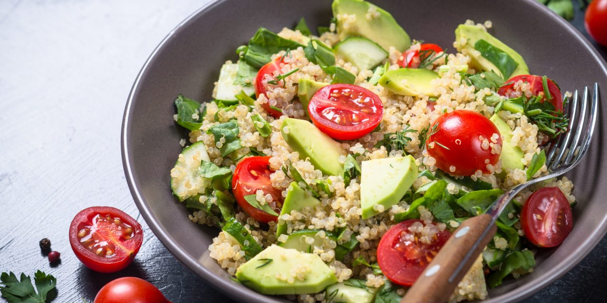
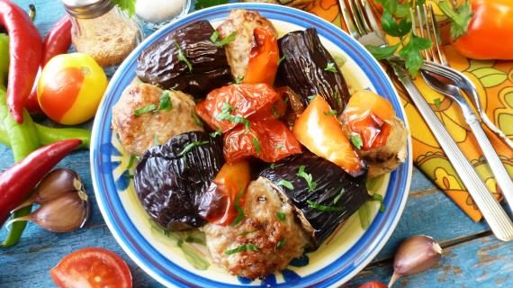
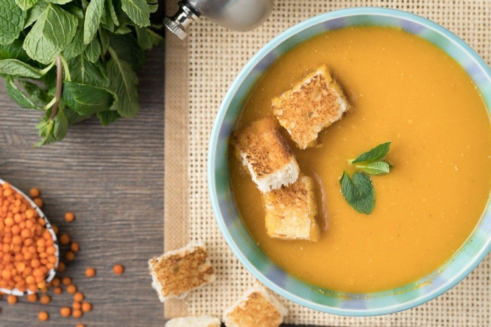

Рецепти здорового харчування

Салат з авокадо та кіноа
- Кіноа - 185 г
- Вода - 500 мл
- Сіль - за смаком
- Великий свіжий огірок- 1 шт
- Авокадо - 2 шт
- Помідори чері - 250 г
- Часник- 1 зубчик
- Лайм - 1 шт
- Оливкова олія - 4-5 ст. ложок
- Червоний винний оцет - 1 ст. ложка
- Діжонська гірчиця

Овочева тава
- Фарш із баранини- 500 гм
- Баклажани - 2 шт
- Помідори - 2 шт
- Солодкий перець - 1 шт
- Зіра - 0.5 ч.л.
- Паприка - 0.5 ч.л.
- Оливкова олія - 4 ст.л.
- Цибуля - 1 шт.
- Чорний перець - 0.5 ч.л.
- Сіль - 0.5 ч.л.
- Вода 150 мл

Суп з червоної сочевиці
- Сочевиця - 1 стакан
- Оливкова олія - 50 мл
- Цибуля ріпчаста - 1 шт
- Морква - 2 шт
- Часник - 4 зубч
- Кмин мелений - 2 ч. л.
- Каррі - 1 ч. л.
- Помідор - 600 г
- Лимон - 0,5 шт
- Червоний перець мелений за смаком